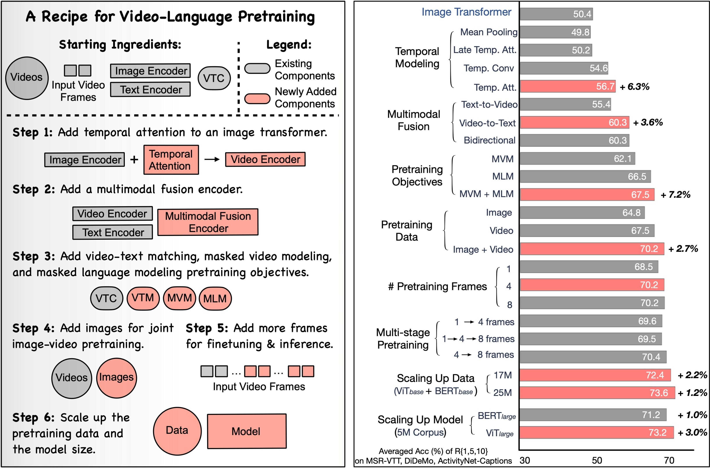
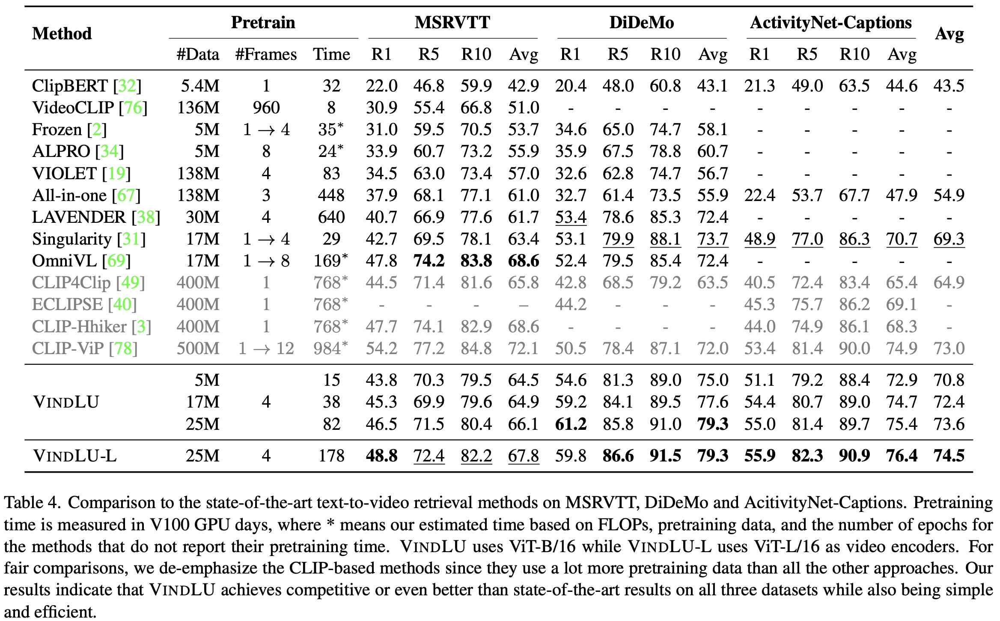
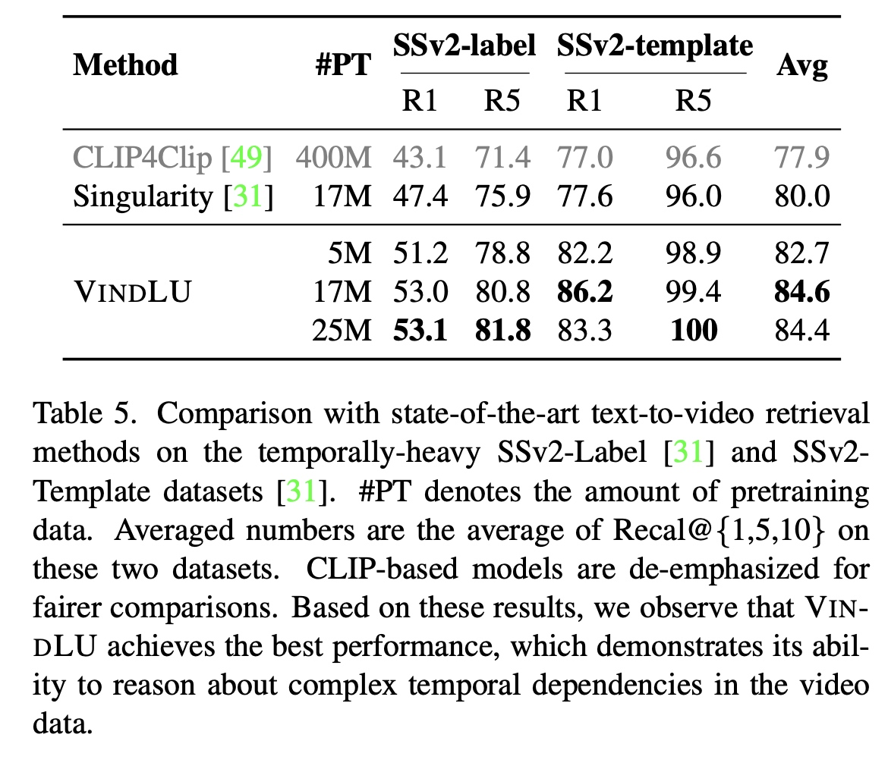
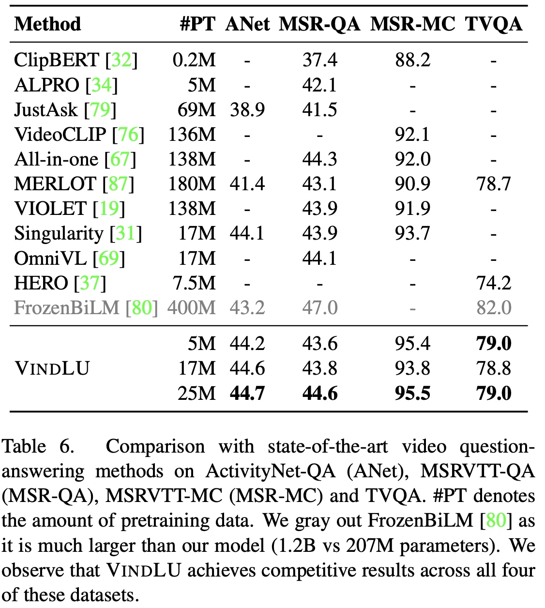

VindLU: A Recipe for Effective Video-and-Language Pretraining
Feng Cheng1 , Xizi Wang2 , Jie Lei1 , David Crandall2 , Mohit Bansal1 , Gedas Bertasius1
1 University of North Carolina at Chapel Hill, 2 Indiana University
CVPR 2023
The last several years have witnessed remarkable progress in video-and-language (VidL) understanding. However, most modern VidL approaches use complex and specialized model architectures and sophisticated pretraining protocols, making the reproducibility, analysis and comparisons of these frameworks difficult. Hence, instead of proposing yet another new VidL model, this paper conducts a thorough empirical study demystifying the most important factors in the VidL model design. Among the factors that we investigate are (i) the spatiotemporal architecture design, (ii) the multimodal fusion schemes, (iii) the pretraining objectives, (iv) the choice of pretraining data, (v) pretraining and finetuning protocols, and (vi) dataset and model scaling. Our empirical study reveals that the most important design factors include: temporal modeling, video-to-text multimodal fusion, masked modeling objectives, and joint training on images and videos. Using these empirical insights, we then develop a step-by-step recipe, dubbed VindLU, for effective VidL pretraining. Our final model trained using our recipe achieves comparable or better than state-of-the-art results on several VidL tasks without relying on external CLIP pretraining. In particular, on the text-to-video retrieval task, our approach obtains 61.2% on DiDeMo, and 55.0% on ActivityNet, outperforming current SOTA by 7.8% and 6.1% respectively. Furthermore, our model also obtains state-of-the-art video question-answering results on ActivityNet-QA, MSRVTT-QA, MSRVTT-MC and TVQA.
1 University of North Carolina at Chapel Hill, 2 Indiana University
CVPR 2023

Abstract
The last several years have witnessed remarkable progress in video-and-language (VidL) understanding. However, most modern VidL approaches use complex and specialized model architectures and sophisticated pretraining protocols, making the reproducibility, analysis and comparisons of these frameworks difficult. Hence, instead of proposing yet another new VidL model, this paper conducts a thorough empirical study demystifying the most important factors in the VidL model design. Among the factors that we investigate are (i) the spatiotemporal architecture design, (ii) the multimodal fusion schemes, (iii) the pretraining objectives, (iv) the choice of pretraining data, (v) pretraining and finetuning protocols, and (vi) dataset and model scaling. Our empirical study reveals that the most important design factors include: temporal modeling, video-to-text multimodal fusion, masked modeling objectives, and joint training on images and videos. Using these empirical insights, we then develop a step-by-step recipe, dubbed VindLU, for effective VidL pretraining. Our final model trained using our recipe achieves comparable or better than state-of-the-art results on several VidL tasks without relying on external CLIP pretraining. In particular, on the text-to-video retrieval task, our approach obtains 61.2% on DiDeMo, and 55.0% on ActivityNet, outperforming current SOTA by 7.8% and 6.1% respectively. Furthermore, our model also obtains state-of-the-art video question-answering results on ActivityNet-QA, MSRVTT-QA, MSRVTT-MC and TVQA.
Key Findings
- Temporal Modeling leads to a significant improvement over the spatial-only baselines. Temporal Attention leads to +6% averaged video retrieval Top-1, 5, 10 accuracy on MSR-VTT, DiDeMo and ActivityNet datasets.
- Multimodal fusion that incorporates video features into text is critical for good VidL performance (+3.6%). Conversely, we find that adding text features to the video representation is not useful.
- Masked Language Modeling (MLM) objective significantly improves performance (+6.2%). However, to obtain such gains, a BERT-like language model pretrained on this objective is needed for initialization. Masked video modeling objective brings an additional +1% improvement.
- Pretraining jointly on images and videos is beneficial (+2.7%). Also, contrary to prior methods, we find multi-stage training unnecessary.
- Pretraining with a small number of frames (e.g., 4) is sufficient and it can significantly reduce the computational cost of large-scale pretraining. Pretraining with more frames does not lead to a substantial performance boost.
- Compared to many recent CLIP-based VidL approaches, our recipe achieves comparable or even better performance with 20\(\times\) less pretraining data.
Experiments
Based on our VindLU recipe, we achieve state-of-the-art results on 9 VidL benchmarks. See the recipe details in threads below. To highlight, on the text-to-video retrieval task, we outperform the state-of-the-arts by 7.8% and 6.1% on DiDeMo and ActivityNet.

 
BibTex
@article{cheng2022vindlu,
title={VindLU: A Recipe for Effective Video-and-Language Pretraining},
author={Cheng, Feng and Wang, Xizi and Lei, Jie and Crandall, David and Bansal, Mohit and Bertasius, Gedas},
journal={arXiv preprint arXiv:2212.05051},
year={2022}
}
Copyright © 2015 Powered by MWeb, Theme used GitHub CSS.